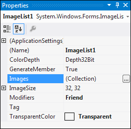
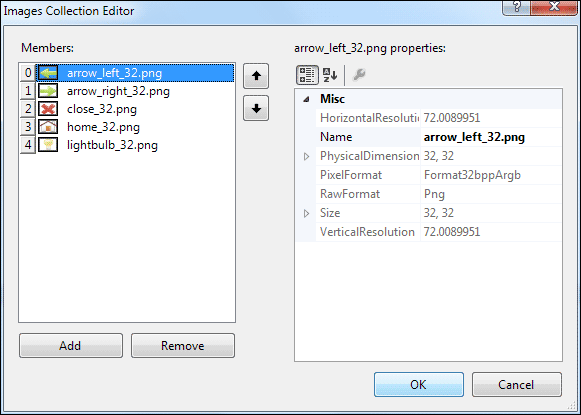
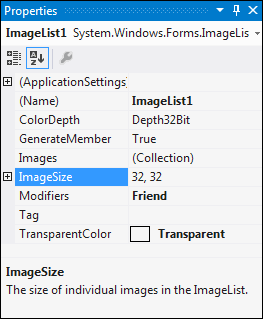
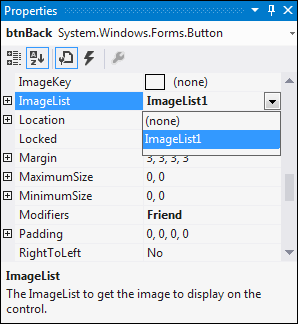
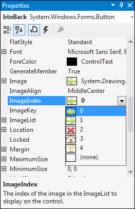
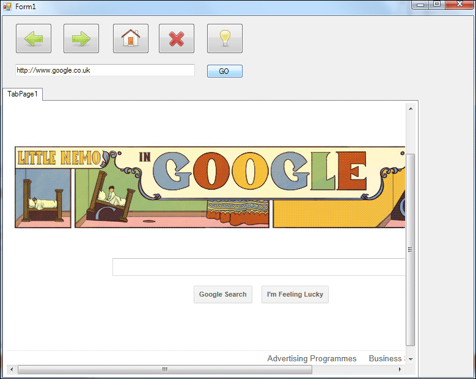

Naviagtion Buttons and C# .NET Image Lists
We'll add some navigation buttons, now. The buttons we'll add will allow us to go back one page, move forward one page, go to the home page, cancel the page loading, and refresh the page. Instead of having text on our buttons, we'll have images.
For the button images, we'll have an ImageList that will allow us to select a picture for all the buttons on the form.
You'll need some images for your buttons. We're using the free icon set from this web page:
The images are all PNG files. If the above link no longer works, try Googling the term "free icons" (with the quote marks). Or search your hard drive for suitable images. You can search for files that end in, say, GIF by entering *.gif in the Windows search box. Go for an image size no bigger than 64 pixels high by 64 pixels wide. Image types supported by the ImageList control are JPEG, GIF, BMP, PNG and ICO.
So, add an ImageList control to your project (under the Components category in the toolbox).
The ImageList has a ColorDepth property that we need to change. Our images are in the PNG-24 format, where the 24 stands for the number of bits. You'd think, then, that we'd need to set the ColorDepth to 24Bit. However, they look awful at this Depth. When we switch to 32Bit, they look fine! But if your images look awful, change the ColorDepth property.

To add images to your image list, click the Images button in the Properties area, just to the left of Collection, in the image below:

When you click the small button, you'll see a dialogue box appear. Click the Add button to add some image to your ImageList. We've added five to ours, in the image below:

(We're using the light bulb as a refresh icon.) Click OK when you're done.
Our images are 32 pixels high by 32 pixels wide. We can change to that size in the ImageList properties area. The default is to have the images 16 by 16. Type the new size into the ImageSize property, if you need to:

Graphic Buttons
Adding graphics to your buttons is quite easy. Add a button to your form, using the toolbox area on the left. Change the Name property to btnBack. Delete the default text from the Text property of the button, leaving it blank. Resize your button to a suitable size.
To add an image from your ImageList, locate the ImageList property for btnBack. From the dropdown box, select the name of your ImageList:

Now locate the ImageIndex property. Click the dropdown box and you'll see a list of all your available images. Select the image you're going to use for your Back button. We're using a left-pointing green arrow for ours, which has the ImageIndex of 0:

Once you've selected an image, take a look at your button. It should have your picture on it:
The code for the back button is quite simple. So double click your button to get at the coding window. Add the following:
if (webBrowser1.CanGoBack)
{
webBrowser1.GoBack();
}
We're using an if statement first to check whether there is a page to go back to. This is done with the CanGoBack property of the WebBrowser object.
If there is a page to go back to, we then use the built-in GoBack function. This will force the browser to go back to the page you were previously looking at.
Exercise
Add four more buttons to your Form. Set up the following properties for your
buttons:
Name: btnForward
Image: An image of your choice
Name: btnHome
Image: An image of your choice
Name: btnStop
Image: An image of your choice
Name: btnRefresh
Image: An image of your choice
When you're done, your form may look something like ours:

Test out your programme, though. Navigate to a web page like Google. Enter something in the search page, just so as to bring up a second page. Now click your Back button. You should be taken back to the previous page.
Exercise
Below, you'll find four pieces of code. Add the right code to the appropriate
button:
if (webBrowser1.CanGoForward)
{
webBrowser1.GoForward();
}
webBrowser1.Stop( );
webBrowser1.GoHome( );
webBrowser1.Refresh( );
So you're adding code to each of your remaining four buttons. When you're done, all four buttons should work, when you run your programme.
In the next lesson below, we'll take a look at how to add Tool Tips.